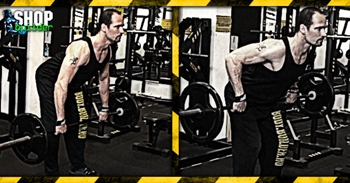

Ugrás a tartalomra
Ugrás a tartalomra
Testépítés
Döntött törzsű evezés
{kind=link}
Hatás
A döntött törzsű evezés a széles hátizmot veszi igénybe, másodlagos hatással van a csuklyás izomra, a rombuszizomra, a mély hátizmokra, a deltaizom hátsó felére, a kétfejű szárizomra és az alkarokra.
Kiinduló helyzet
A lábad legyen kb. vállszélességnyire terpeszben, és hajolj előre minimum 45 fokos szögig, de ha bírod derékkal, akkor a törzsed vízszintes pozíciójáig is előrehajolhatsz. Hajlítsd be kissé a térdeidet, hogy a hát alsó részében lévő szükségtelen feszültség eltűnjön. Ragadd meg a rudat vállszélességben úgy, hogy a tenyered befelé nézzen. A karodnak egyenesen kell lógnia a mozgás kezdetekor.
A mozgás
Húzd fel a rudat a hasad/mellkasod irányába oly módon, hogy a könyöködre koncentrálsz a mozdulat egész ideje alatt. Ez fog segíteni abban, hogy kikapcsold a mozgásból a bicepszedet amennyire lehet. Amikor a rúd megérintette a törzsedet, lassan engedd vissza a kiinduló pozícióba. Semmiképpen se segíts e a törzseddel a mozgásba - ez a hatékonyságot is csökkenti, ellenben a sérülésveszélyt jelentősen megnöveli. Inkább csökkentsd a súlyt, ha másképp nem megy.
Edzéstipp
Végezheted a gyakorlatot kifelé fordított tenyérrel is, ez tejesen más érzetet fog kelteni a hátizomban.
A felső, csúcs-összehúzódási pontban próbáld meg a könyökeidet legalább gondolatban egymás felé közelíteni a hátad mögött, kvázi összepréselve a hátizmokat. Ez segíteni fog az izomérzet kialakulásában.
A dőlésszöggel a stimuláció iránya is némileg változik. Ha derékszögben előredőlve végzed a gyakorlatot, akkor a hátizom felső része több terhelést kap, ha viszont 45 fokban hajolsz előre, akkor a hátizom alsó része kapja a nagyobb stimulust. A fogás szélessége ugyancsak számít: ha szélesebb fogást alkalmazol, akkor a hátizom belső része kap jelentősebb stimulációt. Ha szűkebben fogod a rudat, akkor a hátizom külső részét fogod jobban érezni.